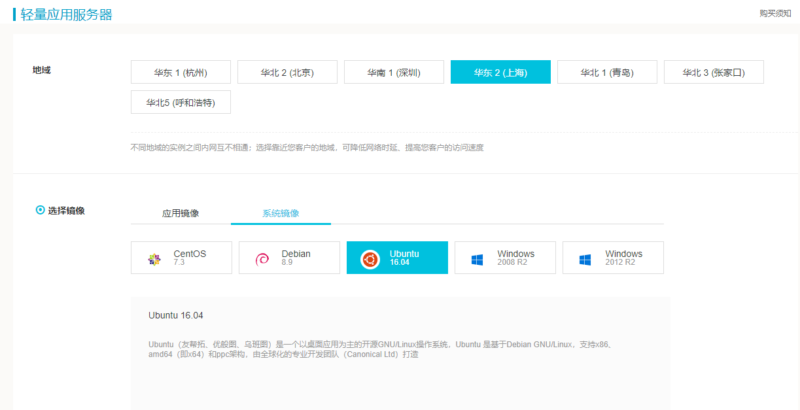
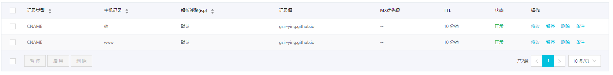
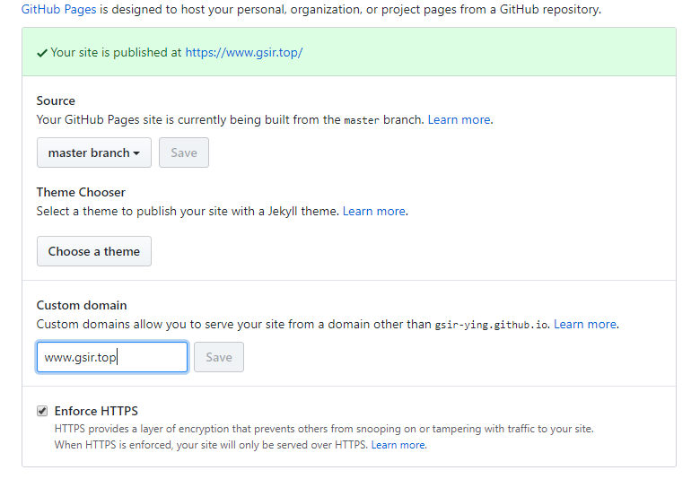

hugo+gitpages绑定个人域名
文章目录
个人域名的申请、注册、备案和解析流程；gitpages绑定个人域名需注意事项。GSir的个人域名为：https://www.gsir.top
域名申请
01 注册阿里云并登录，进行实名认证和学生认证。
02 购买阿里云服务器（3个月以上，后面域名解析和备案需要），学生用户有优惠，GSir购买的是ubuntu轻量级应用服务器，期限为一年，学生用户首次购买大概一百多一点。 
03 购买自己定制的域名，如gsir.top。
04 域名备案，进入阿里云备案系统，根据提示进行填写信息，等待初审通过，上传备案资料，等待管局审核，审核成功后即可。整个周期大概十几天左右，需耐心等待。
05 备案成功，进行域名解析，添加自己所需要的记录，GSir添加了两个github项目的网址。 
gitpages配置个人域名
01 登录github，进入需要绑定个人域名的项目，进入设置，设置github pages的个人域名，如www.gsir.top，保存即可。 
02 设置hugo项目中的config.toml，设置baseURL = “ https://www.gsir.top/ “ 。重新发布博客并上传至github。
03 大功告成，可以通过 https://www.gsir.top 来访问GSir的博客啦！
如果hugo本地server调试博客网页显示正常，但发布至github却无法正常显示CSS样式，注意很可能是config.toml的baseURL设置不正确，导致无法访问正确的CSS样式表。这个小问题一不注意花费了个人好长时间，在此记录以提示他人不要犯同样的错误。
文章作者 GSir
上次更新 2018-11-11